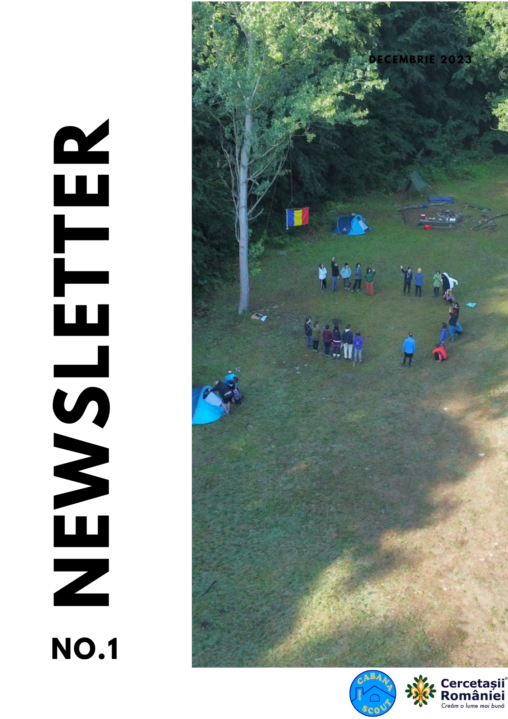
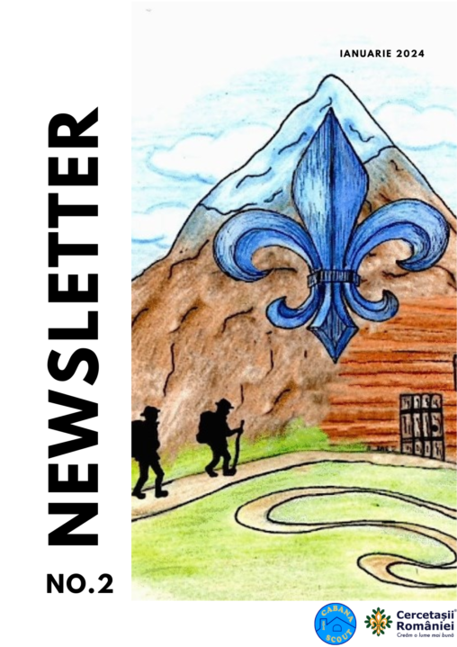
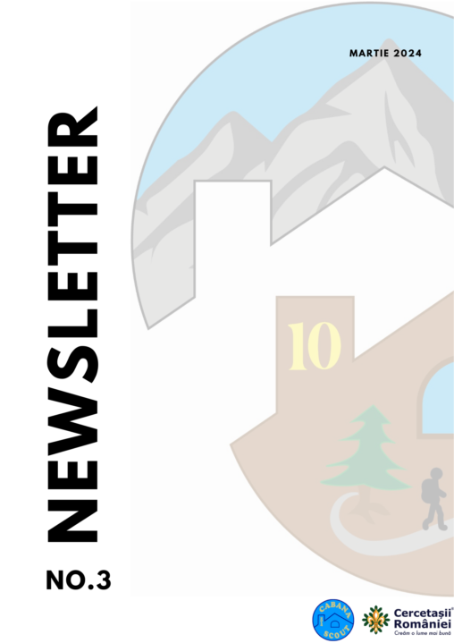

📰 Newslettere • ian–mar 2024
Newsletterele #1–3



#3 — martie 2024 (8 pagini)
Galerie imagini originale:
https://cabanascout.ro/wp/wp-content/uploads/2024/03/ — 1-1.png (coperta), 1.png … 8.png
„Foarte frumoase poveștile celor patru ramuri! La Temerari pare a fi mâna lui J.K. Rowling. Mulțumim — pentru organizare și pentru că ne țineți informați. Când este Festivalul Luminii?" — Traian T., părinte, martie 2024